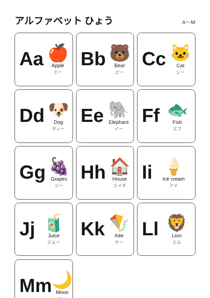
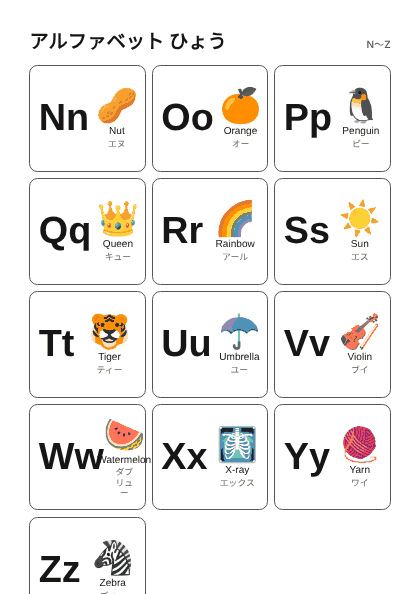
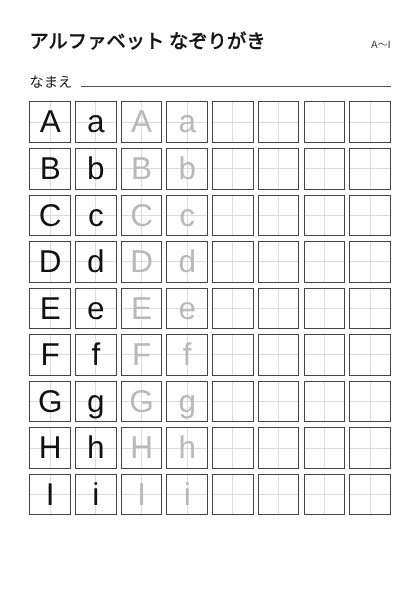
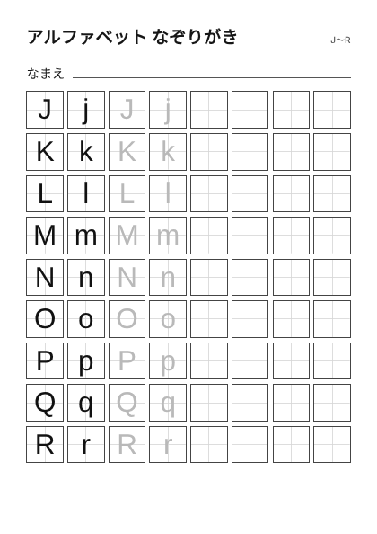
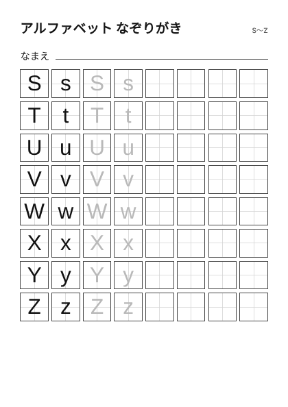

ホーム > アルファベット
アルファベット
大文字・小文字・絵・読み方をそろえたアルファベット表と、なぞり書きのシートです。

アルファベット表 A〜M大文字・小文字・絵・読み方
アルファベット表 N〜Z大文字・小文字・絵・読み方
アルファベット なぞりがき A〜I大文字と小文字をなぞって書く
アルファベット なぞりがき J〜R大文字と小文字をなぞって書く
アルファベット なぞりがき S〜Z大文字と小文字をなぞって書く
使い方
- 表を見ながら、絵と音を結びつけて読んでみます。
- なぞり書きは、大文字と小文字を順番になぞります。
- 1回に全部やらず、数文字ずつ進めます。
あわせて使える本
紹介リンクを含みます(Amazonアソシエイト)。書名・著者・出版社・ISBNは書店や国立国会図書館の書誌情報で確認したものです。
- サイモン・バシャー 作、灰島かり 訳(玉川大学出版部)
- アラン・グレ 著・絵(あすなろ書房)